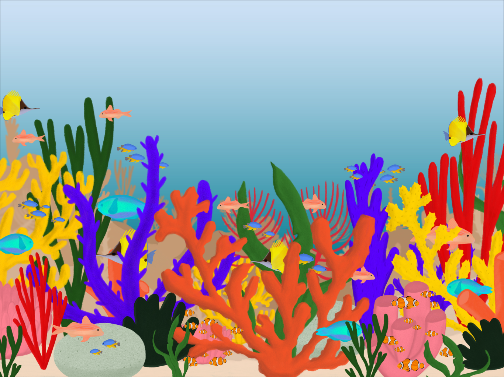

Koraalriffen komen voor in tropische en subtropische zeeën, grofweg tussen de keerkringen van de Kreeft en de
Steenbok. Ze zijn te vinden in ondiep, helder en warm zeewater - meestal op dieptes van minder dan
30m. Wereldwijd beslaan riffen minder dan 1% van de oceaanbodem, maar ze vormen een leefgebied voor naar schatting
25% van alle bekende mariene soorten.

Het water is helder en zacht, warm zoals het hoort — maar niet warmer. Hier, in deze smalle band rond de evenaar, leeft koraal. Verspreid over de tropen vinden ze hun plek — als je even omhoog kijkt, zie je hoe ver hun wereld reikt.